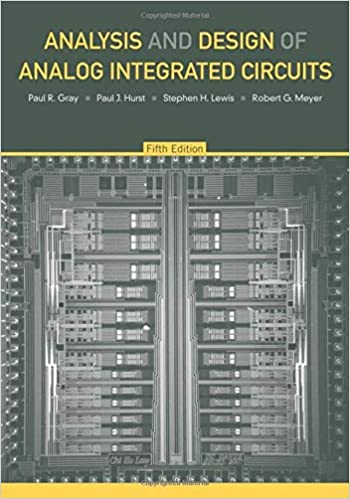

Classes for Analog Design at UT

Here are the classes I took in my bachlor's and how they prepared me for graduate cources in Analog IC Design. The prerequirments for classes do not tell the whole story, so always ask what material is good to know day one. RFIC was much harder conceptually for me because I did not take RF & MW Engineering beforehand.